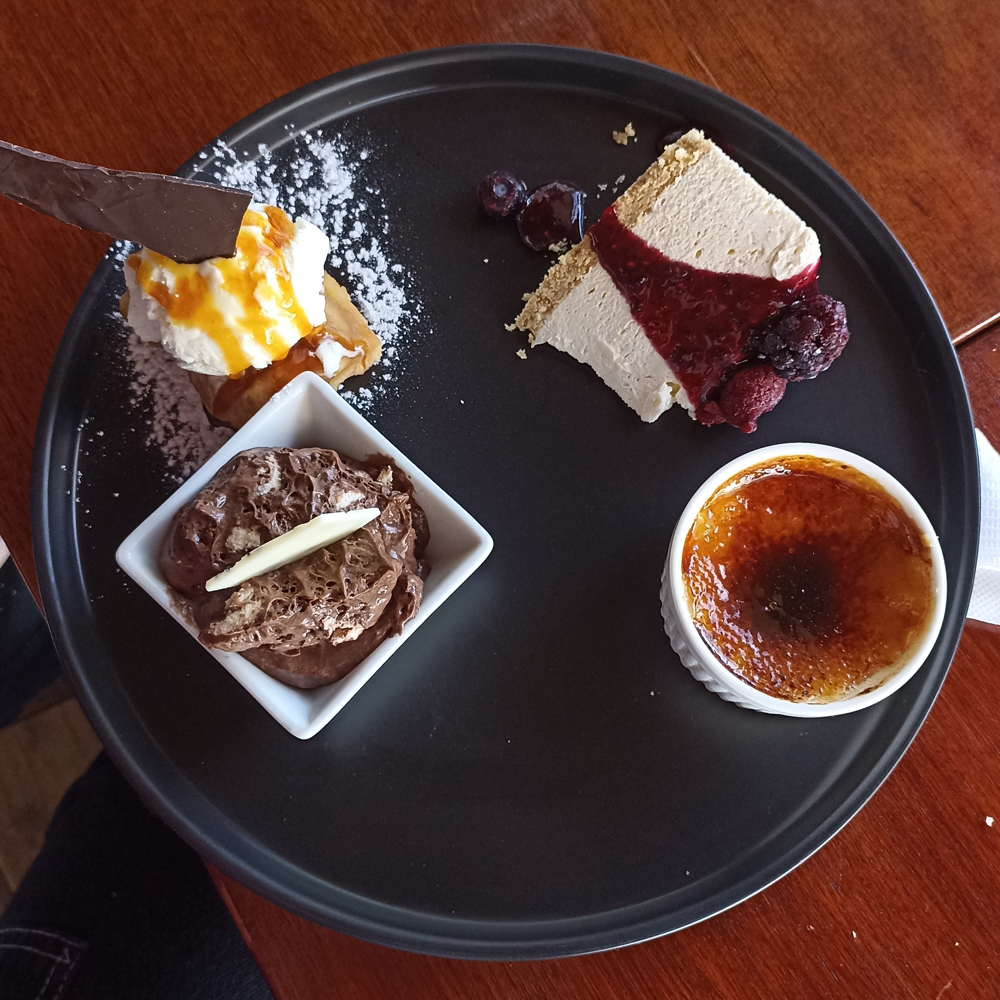

Café y Gatronomía: Maridajes y Postres

Los maridajes de café y postres son una forma exquisita de elevar tu experiencia de degustación. La magia acontece cuando los sabores y las texturas de un buen café se entrelazan armoniosamente con los dulces y decadentes postres. Desde el contraste audaz hasta la complementación sutil, la elección del postre adecuado puede realzar y resaltar las características del café, creando una sinfonía de sabores en tu paladar.
A continuación se presentan sabores que juegan acorde a la combinación y recetas increíbles.

Budín de chocolate belga

Magdalenas con chispas

Pionono de Frutilla